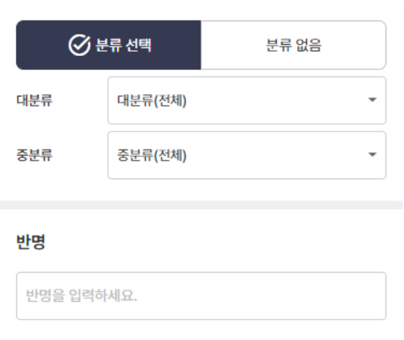
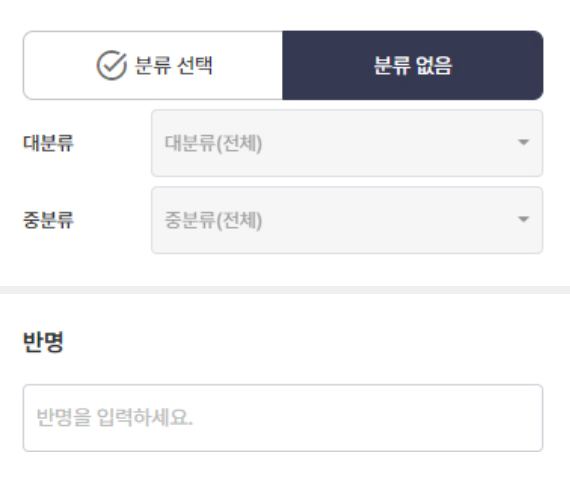
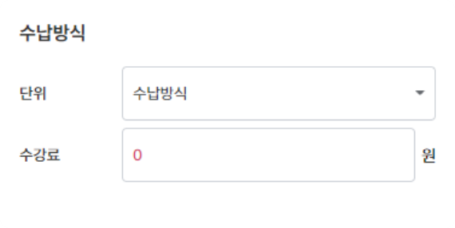

반 등록Check Point
-
분류선택
- 반(클래스)을 신규로 생성할 경우 분류 선택은 필수 사항 입니다.
- 반 분류는 “학사관리 > 반 > 반 관리 설정”에서 대분류, 중분류를 설정하실 수 있습니다.
- 분류는 직접입력으로도 분류 생성이 가능합니다.
분류없음 선택- 분류선택에서 “직접입력”을 선택하시면 “대분류 / 중분류” 인풋박스가 활성화 됩니다.
- 활성화된 인풋박스에 분류명을 직접입력하고 반을 저장 하면 “반 관리설정” 메뉴로 이동할 필요없이 분류가 생성됩니다.
-

- 등록중인 반이 기간에 정함이 있는 반일 경우 수강 시작일과 종료일을 입력합니다.
- 종료일이 도래하게 되면, 해당 반은 운영중인 반에서 종강반으로 분류됩니다.
-

- 등록중인 반이 기간에 정함이 없는 반일 경우 상시운영을 선택합니다.
- 상시운영을 선택한 상태에서는 자동 종강을 지원하지 않습니다.
-
- 등록중인 반의 수납방식을 선택하는 영역입니다.
- 반 기준의 청구자료를 생성할 수 있는 아주 중요한 정보 입니다.
- 수강료 : 등록중인 반의 수강료를 직접 입력합니다.
(숫자만 입력가능)
수납방식 조건 Comment!주 단위 : 주 1회 해당 반의 청구서가 생성되도록 설정하는 조건입니다.개월 단위 : 월 1회 해당 반의 청구서가 생성 되도록 설정하는 조건입니다.1회만 수납 : 수강기간에 상관없이 (2Step 참고) 수강료를 1번만 납입하는 조건 입니다.